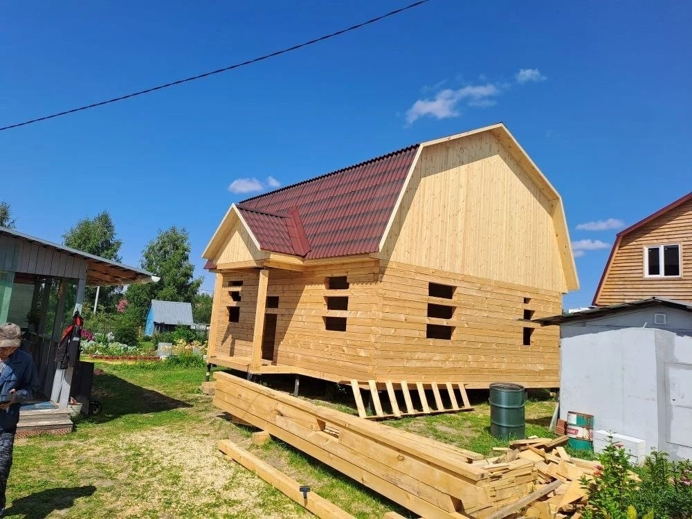
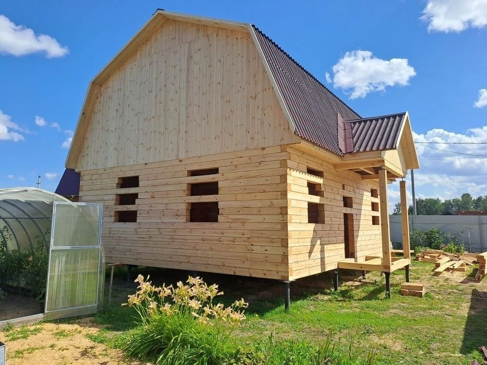

Строим дома и бани
Дома и бани из бруса
Строим деревянные дома и бани из бруса. Подберём проект и обсудим размеры и этапы строительства.
Посмотреть домаПРИМЕРЫ РЕШЕНИЙ
Брус снаружи и внутри
Посмотрите примеры фасадов и внутренней отделки. Материал и состав работ обсудим для вашего участка.

Дом из бруса
Строим дома и бани ·
Дом из бруса
Посмотрите примеры фасадов и внутренней отделки. Материал и состав работ обсудим для вашего участка.
Обсудить строительство